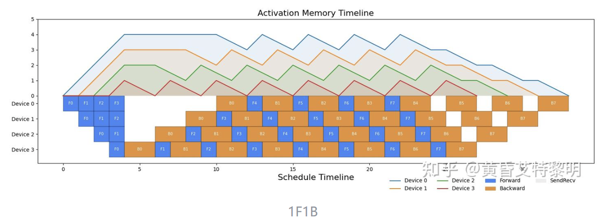
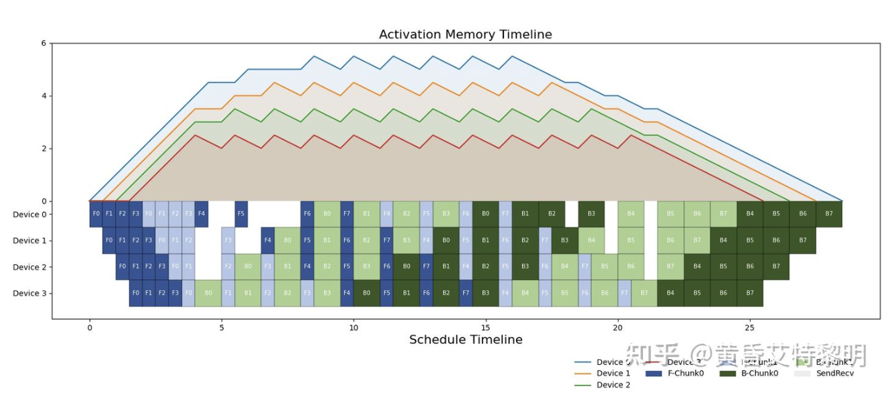

并行算法知识
整理自 流水线并行可视化调度（Gpipe, 1F1B, Interleaved-1F1B, Zero Bubble），聚焦大模型分布式训练中的流水线并行（Pipeline Parallelism, PP）调度策略。
一、PP 并行：流水线并行概述
随着深度学习模型规模的爆炸式增长，单张 GPU/NPU 已无法容纳完整模型。模型并行（Model Parallelism）的核心思想是将模型拆分到多个计算设备上。其中，按层切分的方式称为流水线并行（Pipeline Parallelism, PP）：例如一个 24 层的 Transformer 网络分配到 4 张 GPU 上，每张 GPU 负责 6 层的计算与存储。
1.1 符号约定
| 符号 | 含义 |
|---|---|
p | 流水线并行大小（stage 总数） |
p_i | 第 i 个 pp stage（0 表示第一个 stage） |
vpp | Interleaved-1F1B 中每个 pp stage 内的 chunk 数 |
g | Interleaved-1F1B 的 group 大小 |
b | micro-batch 数量（mini-batch 被切分的份数） |
T_F | 单个 micro-batch 前向计算时间 |
T_B | 反向计算输入 x 的梯度时间 |
T_W | 反向计算参数 w 的梯度时间 |
M_F | 前向带来的激活显存变化量（+1） |
M_B | 反向计算 x 梯度带来的显存变化量（+0） |
M_W | 反向计算 w 梯度后释放激活带来的显存变化量（-1） |
1.2 为什么会有气泡？
流水线气泡（Bubble）指设备处于等待状态、没有执行有效计算的时间。产生原因包括：
- 前向传播时，后面的 stage 必须等待前面 stage 的输出；
- 反向传播时，前面的 stage 必须等待后面 stage 回传的梯度；
- 流水线开始和结束阶段，无法让所有 stage 同时满载。
二、Naive Model Parallelism

Naive Model Parallelism：batch 被切分为 micro-batch（F0-F3），但设备间不做流水交错；每个 stage 先算完所有 micro-batch 的前向，等最后 stage 前向与 loss 完成后，反向自末 stage 依次倒传回首个 stage。
2.1 思想与调度
最直观的按层切分方式：将模型分成 p 个 stage，每个 stage 的参数和计算放在一张卡上。mini-batch 可以被切分为更小的 micro-batch，但在 Naive 模式下设备间不做流水交错——前一个 stage 必须把自己负责的所有 micro-batch 前向算完，后一个 stage 才能开始；前向全部完成后，再从最后一个 stage 依次反向回传。
2.2 特点
- 调度简单：前向、反向依次串行执行；
- 显存均衡：不同设备峰值显存一致；
- 利用率极低：任意时刻仅有一个设备在工作，其余设备空等。
2.3 定量分析
M_F × b / p。当 p=4 时， utilization 仅 25%，75% 的时间都是气泡。
三、GPipe

GPipe 调度：4 个 device、4 个 micro-batch（F0-F3）。stage 间流水交错：device 0 算完 F0 就传给 device 1，自己继续算 F1；反向同样流水回传。气泡集中在流水线启动、结束以及前向→反向转换处，但激活值会在前向阶段持续堆积，形成显存峰值。
3.1 思想与调度
GPipe 将 mini-batch 切分为更小的 micro-batch。第一个 stage 计算完一份数据就立即传给下一个 stage，不必等整个 batch 完成。这样后面的 stage 可以更早开始，从而大幅减少气泡。
3.2 特点
- 将 mini-batch 切分为 micro-batch，流水线执行；
- 不同设备的激活峰值显存仍然一致；
- 实现简单，几乎无损提升，仅增加通信次数。
3.3 缺点
- 仍有较大气泡，主要集中在流水线开始/结束阶段；
- 每个设备在前向过程需要保存所有 micro-batch 的中间激活，显存开销较大。
3.4 定量分析
四、1F1B（One Forward One Backward）

1F1B 调度：4 个 device、8 个 micro-batch（F0-F7）。每个 micro-batch 完成前向后立即进入反向，激活值无需长时间堆积，显存峰值显著低于 GPipe。
4.1 思想与调度
1F1B 的核心是让每个 micro-batch 尽早进行反向传播，不必等待所有 micro-batch 前向完成。这样前向保留的激活可以尽早释放，从而降低设备的峰值显存。
4.2 三个阶段
- warmup：执行
p - p_i - 1次前向； - 1f1b：执行
b - warmup次前向反向交替； - cooldown：执行
p - p_i - 1次反向。
4.3 warmup 次数推导
p - p_i - 1 次前向作为“预热”。如果 warmup 更多，只是把气泡从 warmup 转移到 1f1b 阶段，不降低整体 Bubble Rate，反而增加显存峰值。
4.4 特点
- 稳定阶段采用 1 前向 + 1 反向的交替调度；
- 设备激活峰值显存仅与 stage 位置有关，与 mini-batch size 无关；
- 实现较 GPipe 复杂，但 Bubble Rate 与 GPipe 相同。
4.5 定量分析
M_F × (4-0)/4 = M_F，而 stage 3 的峰值显存为 M_F × (4-3)/4 = M_F/4。因此 1F1B 通过“前轻后重”的显存分布，把系统峰值从 M_F × b / p 降到与 b 无关的 M_F。
4.6 实现细节补充
Megatron-LM 实现 1F1B 时采用了奇偶通信策略，避免交叉通信带来的环状等待。PipeDream 论文还提出了 Weight Stashing 和 Vertical Sync 技术，在允许参数非一致性的情况下进一步降低 Bubble Rate。本文仅讨论参数一致性下的 1F1B。
五、Interleaved-1F1B

Interleaved-1F1B（VPP）调度：4 个 device、8 个 micro-batch，每个 stage 内部包含多个 chunk；stage 间交错执行，last stage 更早启动、first stage 反向更早结束，从而进一步降低气泡。
5.1 动机：1F1B 还剩多少气泡
1F1B 让流水线在稳定阶段达到满载，但整个训练周期仍有两段系统性空闲：
- 启动气泡（warmup）：last stage 必须等前面
p - 1个 stage 各完成一次前向、激活逐级传到手上才能开始计算。灌满流水线的p - 1个时间步里，后面的 stage 全部闲置。 - 排空气泡（cooldown）：反向必须从 last stage 逐级回传，前面的 stage 算完自己的反向后，还要等后面 stage 依次收尾，最后
p - 1个时间步里前面的 stage 闲置。
两项合计 2(p - 1) 个时间单元的空闲。用 p=4、b=8 代入：总时间 = 2b + 2(p-1) = 16 + 6 = 22，气泡率 = 6/22 ≈ 27.3%。也就是说 4 张卡跑 1F1B，约四分之一的时长整卡空转。
5.2 核心机制：把 stage 切成 chunk
Interleaved-1F1B（也称 VPP，Virtual Pipeline Parallelism）把每个 stage 的模型层再切成 vpp 个更小的 chunk，整个模型于是被划分为 vpp × p 个 chunk。划分后的关键是编号交错分配：
- 设备 0 拿 chunk 0、p、2p、…；设备 1 拿 chunk 1、p+1、2p+1、…；依次类推。
- 即：同一台设备上的 chunk 在逻辑前向链上彼此隔开，而非集中在相邻层。
具体例子（p=2、vpp=2、模型共 8 层，每 chunk 2 层）：
- 设备 0：chunk 0（层 0-1）+ chunk 2（层 4-5）
- 设备 1：chunk 1（层 2-3）+ chunk 3（层 6-7）
交错分配带来两个关键收益：
- last stage 更早启动：设备 1 的 chunk 1（层 2-3）只需等设备 0 的 chunk 0（层 0-1）算完即可开算，不必等设备 0 的全部层（层 0-5）完成，流水线灌入时间缩短约 vpp 倍；
- first stage 反向更早结束：反向同样按 chunk 粒度交错回传，设备 0 的 chunk 0 能在流水线更早的阶段拿到梯度并完成反向。
5.3 调度过程详解
调度仍分为 warmup、稳态 1F1B、cooldown 三个阶段，只是操作单元从 stage 变成了 chunk。以 p=2、vpp=2、b=4 为例：
- warmup：设备 0 先算 chunk 0 的 micro-batch 1 前向，紧接着设备 1 的 chunk 1 就能启动（无需等设备 0 算完 chunk 2）；两边按"本设备可算的最靠前依赖"交替灌入前向，直到 chunk 3 完成 micro-batch 1 的前向。
- 稳态：此后每完成一个前向就紧接着执行一个反向（1F1B），前向与反向在 4 个 chunk 间交错展开，激活随反向及时释放。
- cooldown：前向全部结束后，剩余反向从 chunk 3 → chunk 2 → chunk 1 → chunk 0 依次排空。
p - 1 个时间步）才开始；Interleaved 中设备 1 只需等设备 0"一半"（1 个 chunk）就启动。等待时间按比例缩短，宏观效果等同于把气泡从 2(p-1) 摊薄到约 2(p-1)/vpp。
5.4 三个阶段与 warmup 次数
- warmup：设备执行
(vpp - 1) × g + 2 × (p - p_i - 1)次前向； - last stage（p_i = p - 1）需要
(vpp - 1) × group_size次前向进入 1F1B； - 其他 stage 由于同时受前向与反向串行依赖约束，需要额外的
2 × (p - p_i - 1)次前向进入 1F1B。
其中 g / group_size 表示每个分组连续处理的 micro-batch 数（Megatron-LM 实现中通常取 1）。代入 p=4、vpp=2、g=1 计算各设备 warmup 前向数：
| 设备（stage 编号 p_i） | warmup 前向数 | 数值 |
|---|---|---|
| stage 0 | (2-1)×1 + 2×(4-0-1) | 7 次 |
| stage 1 | 1 + 2×(4-1-1) | 5 次 |
| stage 2 | 1 + 2×(4-2-1) | 3 次 |
| stage 3（last） | (2-1)×1 | 1 次 |
5.5 定量分析
Bubble Rate 数值演示（p=4、b=8，vpp 越大气泡越小）：
| vpp | Bubble Rate | 相对 1F1B（27.3%） |
|---|---|---|
| 1（即 1F1B） | 3 / 11 ≈ 27.3% | 基准 |
| 2 | 3 / 19 ≈ 15.8% | 降低约 42% |
| 4 | 3 / 35 ≈ 8.6% | 降低约 69% |
| 8 | 3 / 67 ≈ 4.5% | 降低约 84% |
峰值激活显存数值演示（p=4、vpp=2、g=1，按公式逐项代入）：
| 设备 | 分子 (vpp-1)×g + 2×(p-p_i-1) + 1 | 峰值显存（M_F / 8 × 分子） |
|---|---|---|
| stage 0 | 1 + 6 + 1 = 8 | 1.00 M_F |
| stage 1 | 1 + 4 + 1 = 6 | 0.75 M_F |
| stage 2 | 1 + 2 + 1 = 4 | 0.50 M_F |
| stage 3 | 1 + 0 + 1 = 2 | 0.25 M_F |
(p-1)/(p-1+b) 降到 (p-1)/(p-1+vpp×b)，vpp 每增大一倍气泡约减半；激活峰值显存按公式与 1F1B 相当（stage 0 均为 M_F），并未额外增加——真正增加的代价是通信（见 5.6）。
5.6 代价与工程实践
- 通信次数增加 vpp 倍：前向/反向在每两个相邻 chunk 边界都要通信一次。1F1B 每设备每 micro-batch 通信 1 次，Interleaved 变为 vpp 次（每次传输的数据量约为原来的 1/vpp，总流量不变，但次数上升、单次变小，对通信启动延迟（latency）更敏感）。
- 调度复杂度上升：需要维护 vpp × p 个 chunk 的依赖关系；chunk 边界通信更容易与计算重叠不佳，通常配合奇偶通信策略（偶数 chunk 与奇数 chunk 错峰通信）避免环状等待。
- 何时使用：vpp 越大气泡越低，但通信与显存管理成本越高。实践中 p 较大、b 较大、通信带宽充足时，取 vpp=2~4 收益明显；p 较小或带宽受限时收益有限。
- 注意事项：若每个 chunk 内层数过少，chunk 边界通信开销会抵消气泡收益；一般保证每个 chunk 至少包含 1~2 个 Transformer 层。
实现细节上，Interleaved-1F1B 采用分组交替执行：每执行一组前向或反向就切换到下一个 chunk。调度图与 Megatron-LM 原论文在 warmup/cooldown 阶段存在细微出入，本文参考实际 Megatron-LM 代码实现，并受奇偶通信策略影响。
六、Zero Bubble（零气泡）
6.1 思想
Zero Bubble 系列方法（如 ZB1P、ZB2P）通过将反向传播进一步拆分为 T_B（输入梯度）和 T_W（参数梯度）两个阶段，并重新调度执行顺序，使得前向激活可以在完成 T_B 后立即释放，而 T_W 可以延迟执行以填充气泡，从而在理论上接近零气泡。
6.2 现状
Zero Bubble 目前仍在快速发展中，具体调度策略、内存权衡和工程实现细节因论文版本而异。本文保持“待更新”占位，后续可补充 ZB1P/ZB2P 的精确公式与可视化。
T_W 意味着需要保存更多的中间状态或梯度累计缓冲区。
七、四种策略对比总结
| 策略 | Bubble Rate | 峰值显存（stage 0） | 通信量 | 实现复杂度 |
|---|---|---|---|---|
| Naive MP | (p-1)/p | M_F × b / p | 低 | 低 |
| GPipe | (p-1)/(b+p-1) | M_F × b / p | 中 | 中 |
| 1F1B | (p-1)/(b+p-1) | M_F | 中 | 高 |
| Interleaved-1F1B | (p-1)/(p-1+vpp×b) | M_F × ((vpp-1)×g + 2×(p-1) + 1)/(p×vpp) | 高 | 很高 |
| Zero Bubble | 趋近于 0 | 更高（需额外缓冲） | 高 | 很高 |
八、工程实践建议
- GPU 显存紧张：优先使用 1F1B 或 Interleaved-1F1B，利用其低峰值显存特性；
- 追求吞吐：在显存允许的情况下使用 Interleaved-1F1B，并增大 micro-batch 数量 b；
- 实现成本敏感：GPipe 是简单有效的 baseline；
- 关注 Zero Bubble：适合对训练效率极端敏感、愿意承担更高实现和内存成本的场景。
九、参考资料
- [1811.06965] GPipe: Efficient Training of Giant Neural Networks using Pipeline Parallelism
- Efficient Large-Scale Language Model Training on GPU Clusters Using Megatron-LM
- [1806.03377] PipeDream: Fast and Efficient Pipeline Parallel DNN Training
- Megatron 源码解读（5）：流水线并行中的通信机制
- flyinghu123/PipelineParallelismDemo: 流水线并行可视化 demo